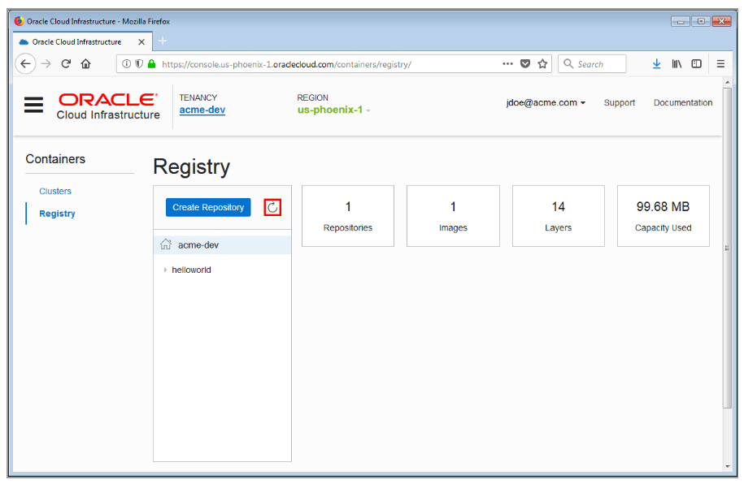

Container Engine for Kubernetes (OKE) Cookbook
Oracle Cloud Infrastructure Container Engine for Kubernetes is a fully-managed, scalable, and highly available service that you can use to deploy your containerized applications to the cloud.
This cookbook will guide you through x3 deployment activities:
- Creating a Cluster with Oracle Cloud Infrastructure Container Engine for Kubernetes, and Deploying a Sample App.
- Pushing an Image to Oracle Cloud Infrastructure Registry.
- Pulling an Image from Oracle Cloud Infrastructure Registry when Deploying a Load-Balanced Application to a Cluster.
Pre-requisites:
- A functioning Oracle Cloud Infrastructure (OCI) account or trial account (preferably in one of the US regions).
Scenario-1: Creating a Cluster with Oracle Cloud Infrastructure Container Engine for Kubernetes and Deploying a Sample App
In this tutorial, if you don't already have a suitably configured VCN and related resources, you'll first create those. Then, you go on to create a new Kubernetes cluster.
This 20-minute tutorial shows you how to:
- Create a configured VCN and related resources for the tutorial (if you don't have one already)
- Create a cluster
- Create a node pool
- Download the kubeconfig file for the cluster
- Verify you can access the cluster using kubectl and the Kubernetes Dashboard
- Deploy a sample app to the cluster
Scenario-2: Pushing an Image to Oracle Cloud Infrastructure Registry
Oracle Cloud Infrastructure Registry is an Oracle-managed registry that enables you to simplify your development to production workflow. Oracle Cloud Infrastructure Registry makes it easy for you as a developer to store, share, and manage development artefacts like Docker images.
This 10-minute tutorial shows you how to:
- Create an auth token for use with Oracle Cloud Infrastructure Registry
- Log in to Oracle Cloud Infrastructure Registry from the Docker CLI
- Pull a test image from DockerHub
- Tag the image
- Push the image to Oracle Cloud Infrastructure Registry using the Docker CLI
- Verify the image has been pushed to Oracle Cloud Infrastructure Registry using the console Browse to the following link for the full step-by-step guide: http://www.oracle.com/webfolder/technetwork/tutorials/obe/oci/registry/index.html